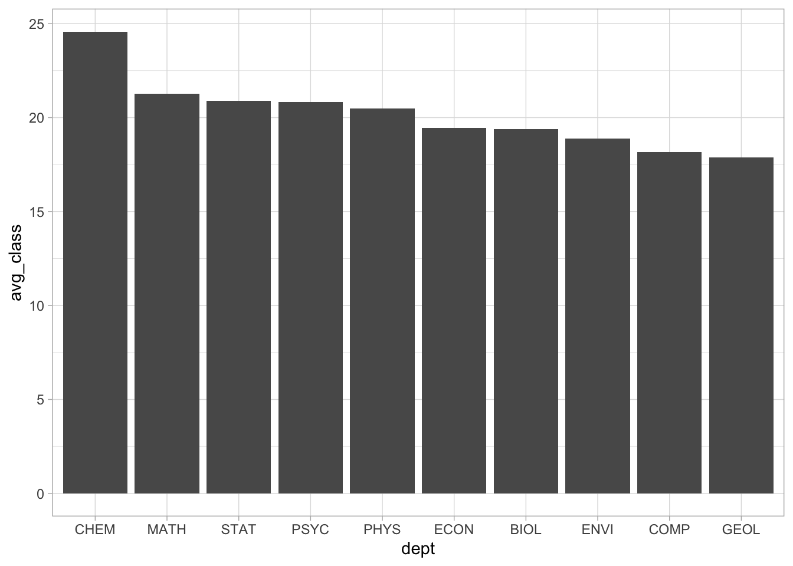
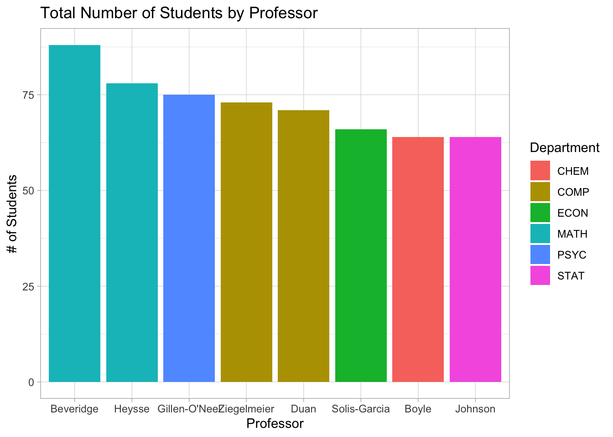

── Attaching core tidyverse packages ──────────────────────── tidyverse 2.0.0 ──
✔ dplyr 1.1.4 ✔ readr 2.1.5
✔ forcats 1.0.0 ✔ stringr 1.5.1
✔ ggplot2 3.5.1 ✔ tibble 3.2.1
✔ lubridate 1.9.4 ✔ tidyr 1.3.1
✔ purrr 1.0.2
── Conflicts ────────────────────────────────────────── tidyverse_conflicts() ──
✖ dplyr::filter() masks stats::filter()
✖ dplyr::lag() masks stats::lag()
ℹ Use the conflicted package (<http://conflicted.r-lib.org/>) to force all conflicts to become errorsStrings
Exercise 1: Time slots
number crn name days
1 AMST 112-01 10318 Introduction to African American Literature M W F
2 AMST 194-01 10073 Introduction to Asian American Studies M W F
3 AMST 194-F1 10072 What’s After White Empire - And Is It Already Here? T R
4 AMST 203-01 10646 Politics and Inequality: The American Welfare State M W F
5 AMST 205-01 10842 Trans Theories and Politics T R
6 AMST 209-01 10474 Civil Rights in the United States W
time room instructor avail_max
1 9:40 - 10:40 am MAIN 009 Daylanne English 3 / 20
2 1:10 - 2:10 pm MUSIC 219 Jake Nagasawa -4 / 16
3 3:00 - 4:30 pm HUM 214 Karin Aguilar-San Juan 0 / 14
4 9:40 - 10:40 am CARN 305 Lesley Lavery 3 / 25
5 3:00 - 4:30 pm MAIN 009 Myrl Beam -2 / 20
6 7:00 - 10:00 pm MAIN 010 Walter Greason -1 / 15# Use our more familiar wrangling tools to warm up
# Construct a table that indicates the number of classes offered in each day/time slot
courses |>
group_by(days) |>
summarise(weekly_schedule = n()) |>
arrange(desc(weekly_schedule))# A tibble: 12 × 2
days weekly_schedule
<chr> <int>
1 "M W F" 325
2 " T R " 215
3 " T " 68
4 " R " 64
5 "M " 36
6 " W " 32
7 "M W " 25
8 " F" 5
9 "" 1
10 " W F" 1
11 "M WR " 1
12 "MTWR " 1# A tibble: 55 × 2
time daily_schedule
<chr> <int>
1 9:40 - 11:10 am 78
2 10:50 - 11:50 am 77
3 9:40 - 10:40 am 74
4 1:10 - 2:10 pm 69
5 3:00 - 4:30 pm 65
6 1:20 - 2:50 pm 63
7 2:20 - 3:20 pm 48
8 3:30 - 4:30 pm 39
9 12:00 - 1:00 pm 38
10 7:00 - 10:00 pm 36
# ℹ 45 more rows# Print only the 6 most popular time slots
courses |>
group_by(time) |>
summarise(daily_schedule = n()) |>
arrange(desc(daily_schedule)) |>
head(6)# A tibble: 6 × 2
time daily_schedule
<chr> <int>
1 9:40 - 11:10 am 78
2 10:50 - 11:50 am 77
3 9:40 - 10:40 am 74
4 1:10 - 2:10 pm 69
5 3:00 - 4:30 pm 65
6 1:20 - 2:50 pm 63Exercise 2: Prep the data
# Split avail_max into 2 separate variables: avail and max.
# Use avail and max to define a new variable called enroll. HINT: You’ll need as.numeric()
# Split the course number into 3 separate variables: dept, number, and section. HINT: You can use separate() to split a variable into 3, not just 2 new variables.
courses_clean <- courses |>
separate(avail_max, c("avail", "max"), sep = " / ") |>
mutate(avail = as.numeric(avail), max = as.numeric(max)) |>
mutate(enroll = max-avail) |>
separate(number, c("dept", "big_number"), sep = " ") |>
separate(big_number, c("number", "section"), sep = "-")Exercise 3: Courses by department
# Using courses_clean, identify the 6 departments that offered the most sections
courses_clean |>
group_by(dept) |>
summarise(nmbr_sections = n()) |>
arrange(desc(nmbr_sections)) |>
head(6)# A tibble: 6 × 2
dept nmbr_sections
<chr> <int>
1 SPAN 45
2 BIOL 44
3 ENVI 38
4 PSYC 37
5 CHEM 33
6 COMP 31# Identify the 6 departments with the longest average course titles
courses_clean |>
group_by(dept) |>
summarise(title_length = mean(str_length(name))) |>
arrange(desc(title_length)) |>
head(6)# A tibble: 6 × 2
dept title_length
<chr> <dbl>
1 WGSS 46.3
2 INTL 41.4
3 EDUC 39.4
4 MCST 39.4
5 POLI 37.4
6 AMST 37.3Exercise 4: STAT courses
Part a
# Get a subset of courses_clean that only includes courses taught by Alicia Johnson.
courses_clean |>
filter(instructor == "Alicia Johnson") dept number section crn name days time
1 STAT 253 01 10806 Statistical Machine Learning T R 9:40 - 11:10 am
2 STAT 253 02 10807 Statistical Machine Learning T R 1:20 - 2:50 pm
3 STAT 253 03 10808 Statistical Machine Learning T R 3:00 - 4:30 pm
room instructor avail max enroll
1 THEATR 206 Alicia Johnson -3 20 23
2 THEATR 206 Alicia Johnson -3 20 23
3 THEATR 206 Alicia Johnson 2 20 18Part b
Create a new dataset from courses_clean, named stat, that only includes STAT sections. In this dataset:
In the course names:
- Remove “Introduction to” from any name.
- Shorten “Statistical” to “Stat” where relevant.
Define a variable that records the start_time for the course.
Keep only the number, name, start_time, enroll columns.
The result should have 19 rows and 4 columns.
Exercise 5: More cleaning
Make the following changes to the courses_clean data. Because they have different enrollment structures, and we don’t want to compare apples and oranges, remove the following:
all sections in
PEandINTD(interdisciplinary studies courses)all music ensembles and dance practicums, i.e. all
MUSIandTHDAclasses with numbers less than 100. HINT:!(dept == "MUSI" & as.numeric(number) < 100)all lab sections. Be careful which variable you use here. For example, you don’t want to search by “Lab” and accidentally eliminate courses with words such as “Labor”.
Save the results as enrollments (don’t overwrite courses_clean).
Exercise 6: Enrollment & departments
Explore enrollments by department. You decide what research questions to focus on. Use both visual and numerical summaries.
# Top 10 departments by average class size
enrollments |>
group_by(dept) |>
summarise(avg_class = mean(enroll)) |>
arrange(desc(avg_class)) |>
head(10)# A tibble: 10 × 2
dept avg_class
<chr> <dbl>
1 CHEM 24.6
2 MATH 21.3
3 STAT 20.9
4 PSYC 20.8
5 PHYS 20.5
6 ECON 19.4
7 BIOL 19.4
8 ENVI 18.9
9 COMP 18.2
10 GEOL 17.9enrollments |>
group_by(dept) |>
summarise(avg_class = mean(enroll)) |>
arrange(desc(avg_class)) |>
head(10) |>
mutate(dept = fct_reorder(dept, avg_class, .desc = TRUE)) |>
ggplot(aes(x = dept, y = avg_class)) +
geom_col() +
theme_light()
Exercise 7: Enrollment & faculty
# Problem: cross-listed courses!
enrollments |>
filter(dept %in% c("STAT", "COMP"), number == 112, section == "01") dept number section crn name days time
1 COMP 112 01 10248 Introduction to Data Science T R 3:00 - 4:30 pm
2 STAT 112 01 10249 Introduction to Data Science T R 3:00 - 4:30 pm
room instructor avail max enroll
1 OLRI 254 Brianna Heggeseth 1 28 27
2 OLRI 254 Brianna Heggeseth 1 28 27# In order to not double count an instructor’s enrollments, we can keep only the courses that have distinct() combinations of days, time, instructor values
enrollments_2 <- enrollments |>
distinct(days, time, instructor, .keep_all = TRUE)
# NOTE: By default this keeps the first department alphabetically
# That's fine because we won't use this to analyze department enrollments!
enrollments_2 |>
filter(instructor == "Brianna Heggeseth", name == "Introduction to Data Science") dept number section crn name days time
1 COMP 112 01 10248 Introduction to Data Science T R 3:00 - 4:30 pm
room instructor avail max enroll
1 OLRI 254 Brianna Heggeseth 1 28 27Now, explore enrollments by instructor. You decide what research questions to focus on. Use both visual and numerical summaries.
# Number of students per instructor (top 10)
enrollments_2 |>
group_by(instructor) |>
summarise(total_students = sum(enroll)) |>
arrange(desc(total_students)) |>
head(10)# A tibble: 10 × 2
instructor total_students
<chr> <dbl>
1 Andrew Beveridge 88
2 Kristin Heysse 78
3 Cari Gillen-O'Neel 75
4 Lori Ziegelmeier 73
5 Lian Duan 71
6 Mario Solis-Garcia 66
7 Alicia Johnson 64
8 Kelsey Boyle 64
9 Susan Green 64
10 Thomas Varberg 62# Number of studets per instructor by department (top 8)
enrollments_2 |>
group_by(instructor) |>
summarise(total_students = sum(enroll)) |>
arrange(desc(total_students)) |>
left_join(enrollments_2, join_by(instructor == instructor)) |>
select(instructor, total_students, dept) |>
distinct(instructor, total_students, .keep_all = TRUE) |>
head(8) |>
separate(instructor, c("first", "last"), " ") |>
mutate(last = fct_reorder(last, total_students, .desc = TRUE)) |>
ggplot(aes(x = last, y = total_students, fill = dept)) +
geom_col() +
labs(
title = "Total Number of Students by Professor",
x = "Professor",
y = "# of Students",
fill = "Department") +
theme_light()